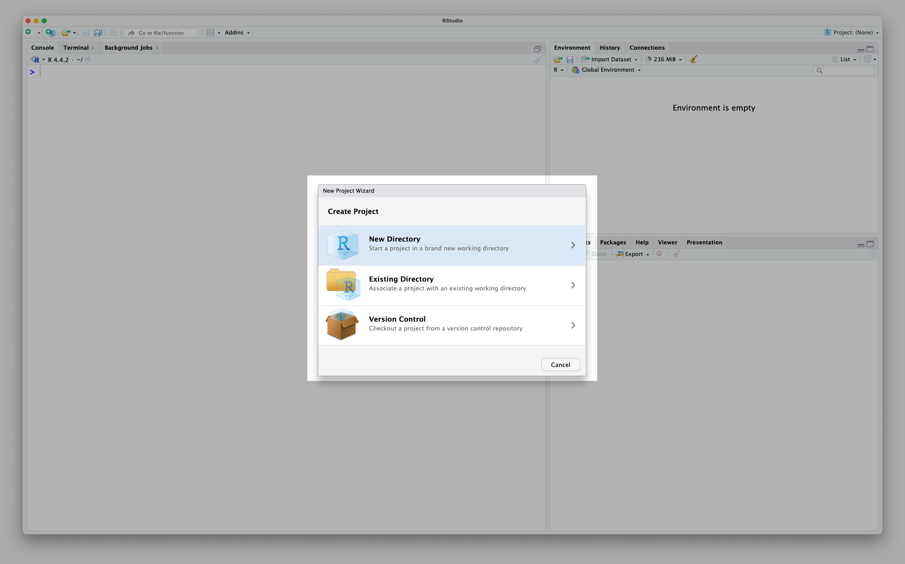
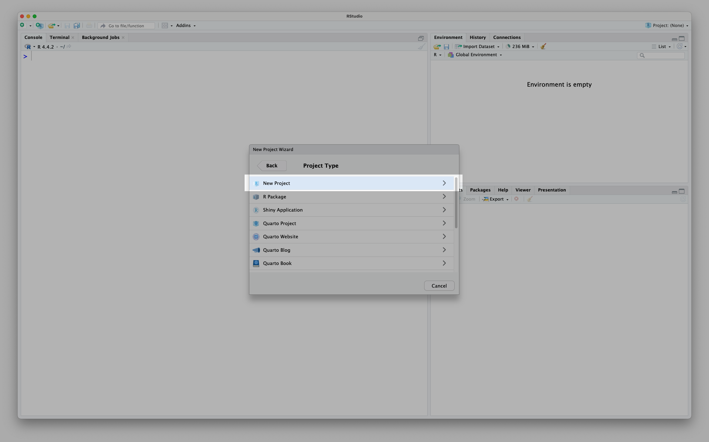
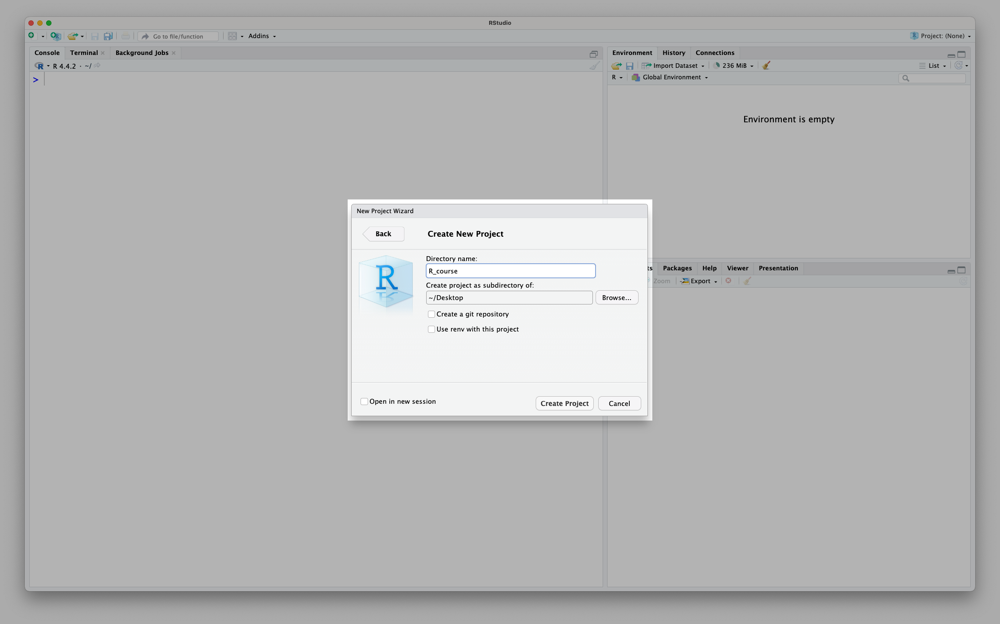
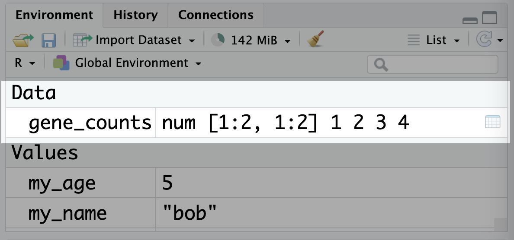

# create a 2x2 matrix and assign it to gene_counts
gene_counts <- matrix(c(1, 2, 3, 4), nrow = 2, ncol = 2)
# print the matrix
gene_counts [,1] [,2]
[1,] 1 3
[2,] 2 4To ensure everyone is working in a consistent environment for the BIOL90042 workshops, we pre-made an R project for you to use. But what if you want to make your own project, for another analysis?
Recall from workshop 1 that you can see all of your R projects and create a new one in the top right hand corner of RStudio:

Usually, you want to create a new project in a new directory (folder) so that everything stays organised:

Next, we need to tell R that we want to make a ‘New Project’ and not any of the other fancy things we could create:

Finally, we need to give our project an informative name:

Don’t forget to name with underscores and not spaces!
As described in Workshop 1 (see Section 4.6.2), matrices are essentially a bunch of vectors stuck together. All elements of a matrix must have the same type. An example of a matrix is a gene count matrices where each row represents a gene, each column represents a sample and therefore each cell represents the count for a particular gene in a particular sample.
You can create a matrix using the matrix() function. The first argument is the vector of values to be put into the matrix, and the nrow and ncol arguments specify the number of rows and columns in the matrix:
# create a 2x2 matrix and assign it to gene_counts
gene_counts <- matrix(c(1, 2, 3, 4), nrow = 2, ncol = 2)
# print the matrix
gene_counts [,1] [,2]
[1,] 1 3
[2,] 2 4Note that unlike data frames, the columns don’t necessarily have names. Matrices are their own type of object in R:
class(gene_counts)[1] "matrix" "array" And they show up in the environment panel in RStudio under ‘Data’, just like data frames do:

The rows and columns can be labelled with names, although these names are considered metadata rather than being a part of the matrix. You can set them by assigning vectors of names to the rownames() and colnames() functions:
# set row and column names
rownames(gene_counts) <- c("gene1", "gene2")
colnames(gene_counts) <- c("sample1", "sample2")
# print the matrix, now with names!
gene_counts sample1 sample2
gene1 1 3
gene2 2 4You’ll usually only interact with matrices in the context of RNA-seq analysis, which we will cover in ?sec-workshop07.